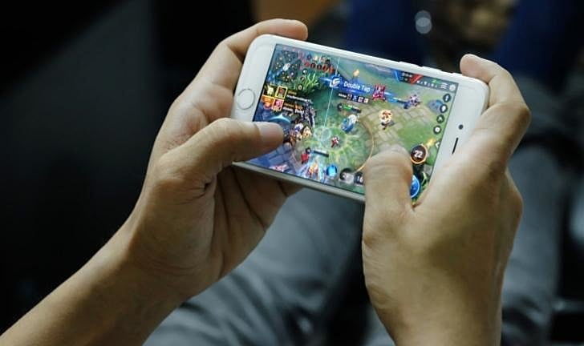

Jogos no Celular: O Futuro do Gaming?
postado 04 setembro 2024 Com gráficos cada vez mais avançados, os jogos mobile estão ganhando espaço! Títulos como Genshin Impact e Call of Duty Mobile provam que os smartphones são plataformas poderosas. Além disso, serviços de streaming de jogos, como o Xbox Cloud Gaming, tornam possível jogar títulos AAA em qualquer lugar. Você acha que os consoles estão ameaçados?
Leia mais